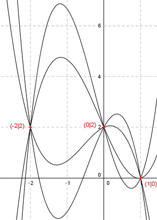

Aufgabe 53 Alle Graphen einer ganzrationalen Funktion 3. Grades gehen durch die Punkte (1|0), (0|2), (-2|2). Wie lautet die Funktionsgleichung dieser Kurvenschar? Allgemeine Form einer ganzrationalen Funktion 3. Grades: f(x) = ax3 + bx2 + cx + d f’(x) = 3ax2 + 2bx + c f’’(x) = 6ax + 2b 3 Bedingungen, 4 für eine eindeutige Lösung nötig --> Kurvenschar: 1. Geht durch den Punkt (1|0) bedeutet: f(1) = 0 --> a * 13 + b * 12 + c * 1 + d = 0 --> a + b + c + d = 0 I 2. Geht durch den Punkt (0|2) bedeutet: f(0) = 2 --> a * 03 + b * 02 + c * 0 + d = 2 --> d = 2 3. Geht durch den Punkt (-2|2) bedeutet: (d = 2 eingesetzt) f(-2) = 2 --> a * (-2)³ + b * (-2)² + c * (-2) + 2 = 2 --> -8a + 4b - 2c + 2 = 2 | -2 --> -8a + 4b - 2c = 0 II I * 2 (d = 2 eingesetzt) + II 2a + 2b + 2c + 4 = 0 -8a + 4b - 2c = 0 ---------------------- -6a + 6b + 4 = 0 |-4 -6a + 6b = -4 |+6a 6b = 6a - 4 |:6 b = a - 2/3 b = a - 2/3 und d = 2 in I eingesetzt: a + (a - 2/3) + c + 2 = 0 2a - 2/3 + c + 6/3 = 0 2a + 4/3 + c = 0 |-4/3 2a + c = -4/3 |-2a c = -2a - 4/3 c = -(2a + 4/3) Gesuchte Funktionsgleichung: f(x) = ax3 + (a - 2/3)x2 - (2a + 4/3)x + 2 Darstellung für 4 verschiedene a. Von oben nach unten: a1 = 2 a2 = 1 a3 = -1 a4 = -2 